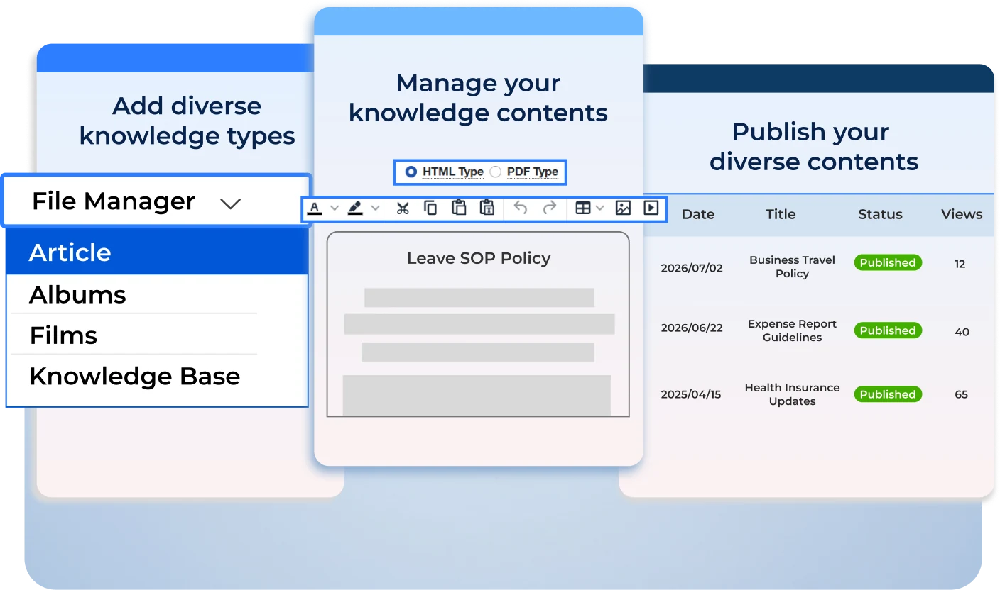

การสร้างองค์ความรู้หลากหลายรูปแบบ
- เพิ่ม จัดการ และเผยแพร่: มีฟังก์ชันสำหรับเพิ่ม จัดการ และเผยแพร่เนื้อหาองค์ความรู้ที่หลากหลาย (เช่น บทความ อัลบั้ม วิดีโอ ไฟล์ และเว็บไซต์) เพื่อตอบโจทย์ความต้องการด้านการนำเสนอองค์ความรู้ที่หลากหลายของบริษัท